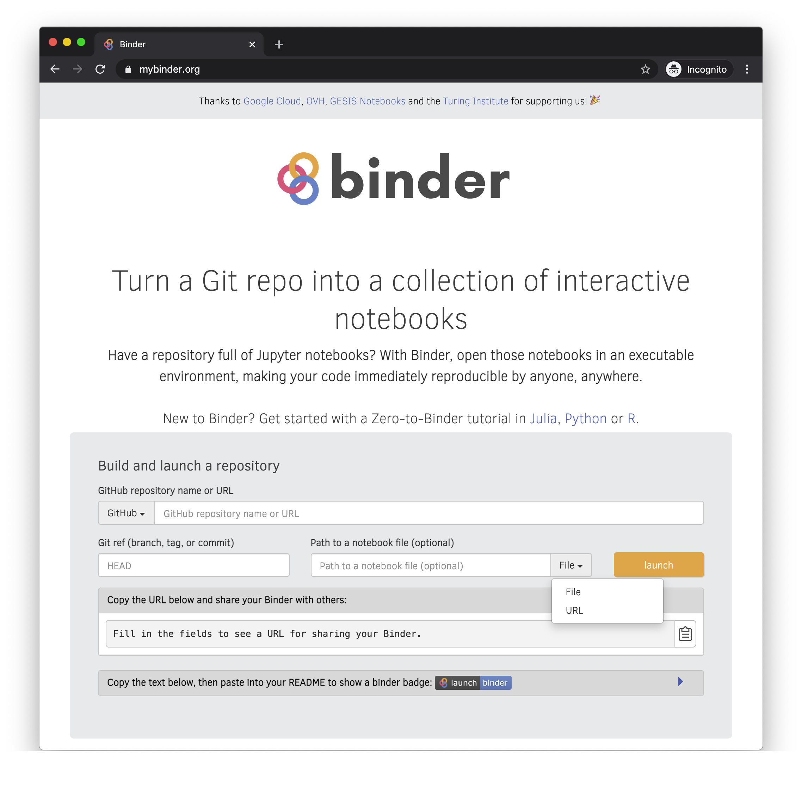
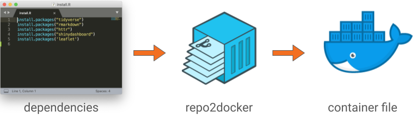

MyBinder.org¶
The public and free MyBinder.org service enables anyone to start and use a Jupyter environment that is automatically prepared with what’s needed to run contents of a public git repository. As an example, you can click on this mybinder.org link to start and use a Jupyter environment with Python, C++, and R and some example notebooks from the jupyterlab/jupyterlab-demo repository on GitHub.
Terminology¶
As Binder is often casually used to refer to multiple things, it’s useful to distinguish that:
mybinder.org is a free and public service.
BinderHub is a kubernetes-based cloud service that allows users to share reproducible interactive computing environments from code repositories. It is the open source software used by mybinder.org.
A BinderHub-ready git repository could be referred to as a binder.
Creating a BinderHub-ready git repository¶
To make your notebooks accessible with mybinder.org, you have to make them public in a git repository and declare what is required for them to run properly.
Recommended guides¶
While we provide some details below, we highly recommend the following external, more detailed programming language tailored guides:
About specifying an environment¶
In order for mybinder.org to reproduce computational work in a notebook, it needs both the code itself and the code’s dependencies declared, such as Python’s matplotlib library.
To declare software dependencies for various programming languages, you can use standard configuration files. Some of the common configuration files recognized by all BinderHubs include:
environment.yml: a standard configuration file for installing packages from conda.
requirements.txt: a standard file for installing Python packages using
pip installProject.toml: the configuration file for installing a Julia environment
install.R: the configuration file for installing an R or RStudio environment
A complete listing of configuration files that can be used with Binder is available in the documentation.
Tips for reproducibility of results¶
Run your notebooks from start to finish. By using
Kernel --> Restart --> Run All, you can confirm that your notebooks were in and arrives to a state you are expecting (see the discussion on managing state).Freeze your environment. As software evolves, it is relevant for reproducibility to capture a snapshot in time of the current versions in your environment. To do so, you can for example use:
pip freezeto export to requirements.txtconda env export -n <env-name>to export toenvironment.yml
Example git repositories¶
An extensive listing of Binder-ready repositories for a range of programming languages is available in the documentation. For the geoscience community, a couple particularly-relevant examples include:
Sharing your notebooks on a public BinderHub¶
mybinder.org and binder.pangeo.io provide public binders where you can create a link to an interactive session with your code. The image below shows the interface for mybinder.org. The Pangeo Binder interface is very similar and has additional functionality for launching a Dask-Kubernetes cluster for distributed computation.

Step 1: Specify Repository Location¶
If your repository is public on GitHub, as a Gist, on GitLab, Zenodo, Fighare or and of the locations in the first dropdown menu, the first step is to paste the URL into the first entry box.
After you enter this, the URL in the “Copy the URL below and share your Binder with others” will begin to build.
https://mybinder.org/v2/gh/<username>/<repository>/HEAD
Step 2 (Optional): Specify a specific branch, tag or commit¶
If there is a specific branch, tag or commit you would like built, you can enter that here. For example to build the main branch, you enter main and the URL will update to
https://mybinder.org/v2/gh/<username>/<repository>/main
Step 3 (Optional): Specify the path to a notebook or URL for a different interface¶
If you would like a specific notebook to open when a user launches, you can specify that here. For example, if I want to point users to a summary notebook called index.ipynb, then on the right, I set the dropdown to “File”, enter index.ipynb and the URL will update to
https://mybinder.org/v2/gh/<username>/<repository>/main?filepath=index.ipynb
Alternatively, if you wanted to open in JupyterLab rather than the notebook (the current default), you can change the dropdown on the right to “URL” and enter lab. The URL will then update to
https://mybinder.org/v2/gh/<username>/<repository>/main?urlpath=lab
Note that if you wanted to specify both a filepath and a urlpath, you can customize the link yourself
https://mybinder.org/v2/gh/<username>/<repository>/main?urlpath=lab?filepath=index.ipynb
What happens when Binder builds your repository?¶
Binder fetches your repository from GitHub or wherever you specified its source location.
repo2docker looks at your repository for the specified environment and builds a docker container from your repository 
Binder launches that Docker image in the Cloud
You are connected to that interactive session in your web-browser.